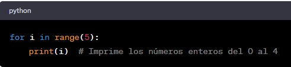
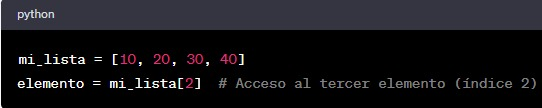
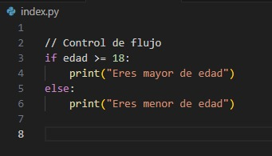
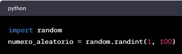

Contadores y Bucles
Los números enteros se utilizan para contar iteraciones en bucles. Por ejemplo, en un bucle "for" o "while", un contador entero controla cuántas veces se ejecuta el bucle

Índices de Matrices y Listas
Los números enteros se utilizan como índices para acceder a elementos específicos en matrices, listas y otros tipos de estructuras de datos.

Control de Flujo
Los números enteros se utilizan en declaraciones de control de flujo, como condicionales "if" y "switch", para tomar decisiones basadas en valores numéricos.

Generación de Secuencias
Los números enteros se utilizan para generar secuencias de números, como números aleatorios o números en una serie.